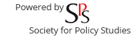
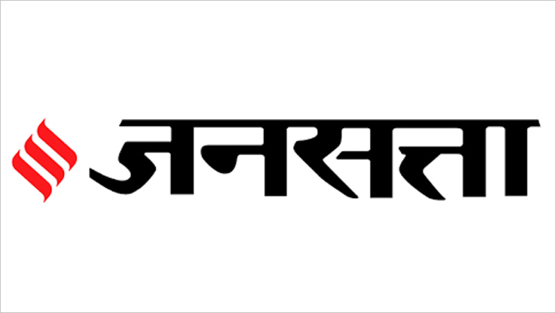
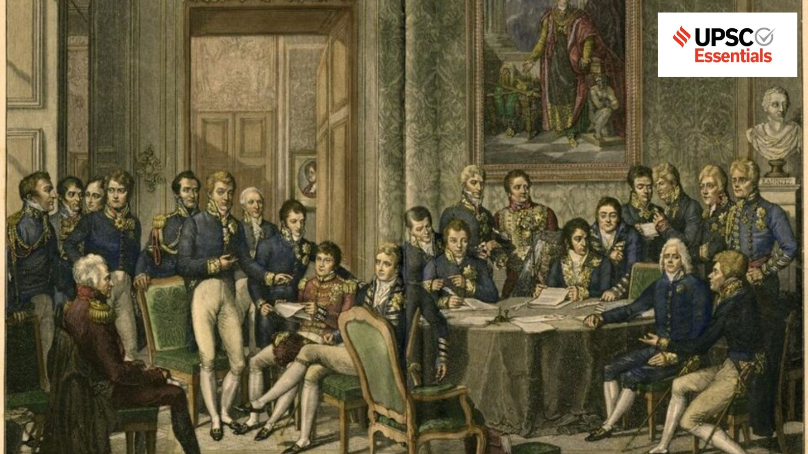
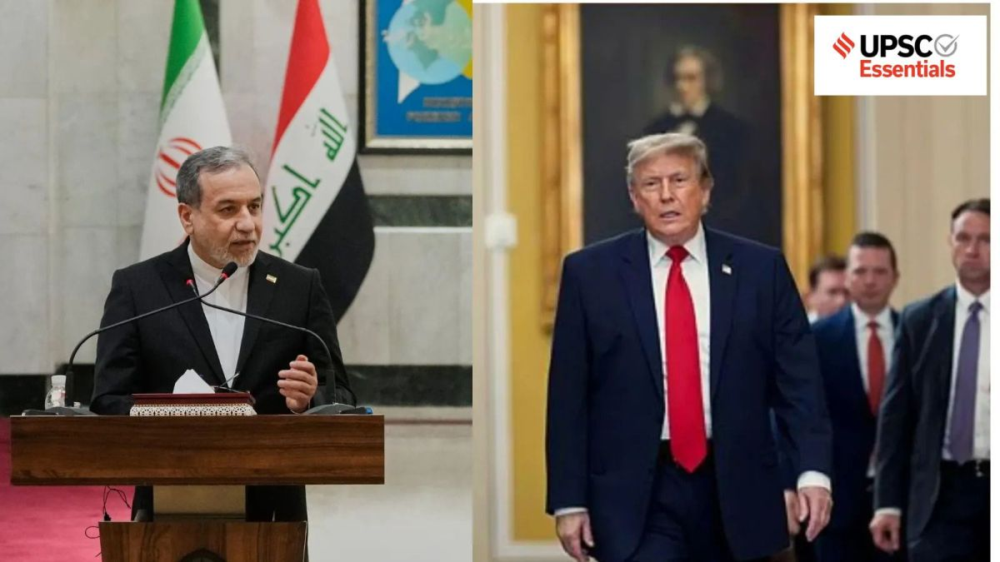
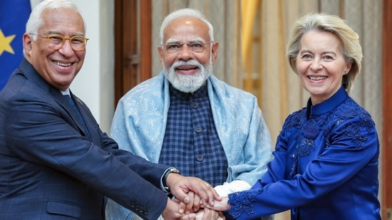
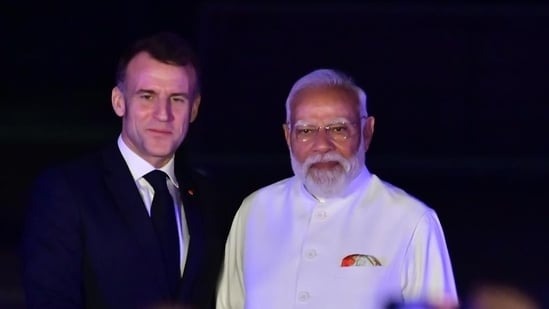
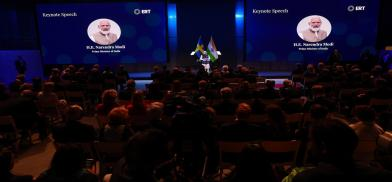
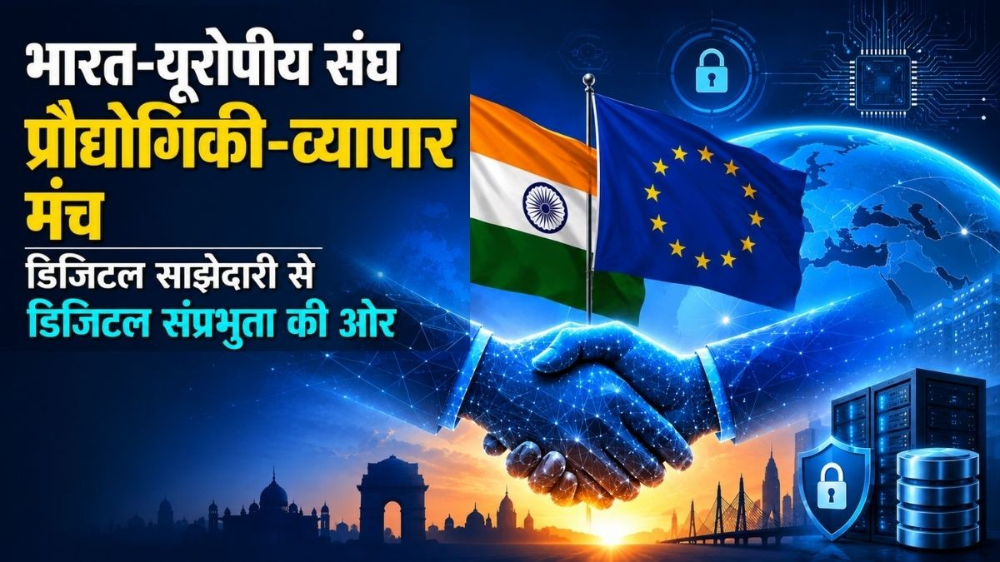

Public-facing scholarship
Media & Policy Writing
Analysis connecting research on Europe, technology, trade, diplomacy, and international political economy with public debate.
Published in


Commissioning & invitations
To invite a research article or opinion piece, please get in touch.
Contact Sanket →
The Indian Express · July 2026Europe’s continued role in high-stakes diplomacy
Read article →
The Indian Express · July 2026Why is Europe on the margins of mediation in consequential conflicts?
Read article →
Hindustan Times · June 2026EU–India trade deal: The path ahead
Read article →
Hindustan TimesFrom Nice: A partnership built on trust
Read article →
South Asia MonitorBetween melody, moment and hard work ahead: Modi’s Europe tour
Read article →
Jansatta · Opinion